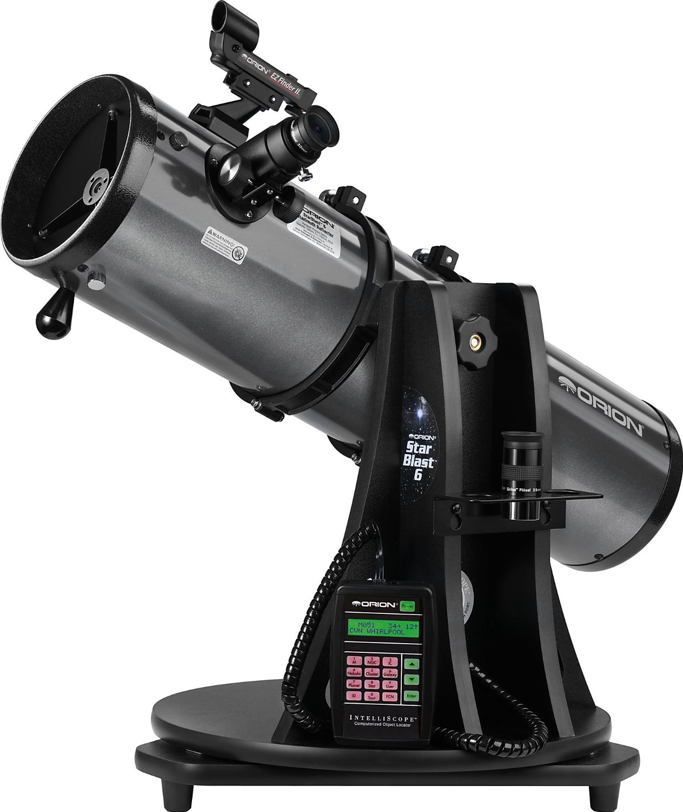

Orion StarBlast 6i IntelliScope Reflector Telescope

-
Clever tabletop reflector telescope can lead beginners and experienced amateurs to more than 14,000 celestial objects with its easy to use push-to IntelliScope Computerized Object Locator
-
Substantial 6" aperture optics reveal sharp views of the Moon and bright planets like Mars, Jupiter, and Saturn
-
750mm focal length (f/5.0) optics provide contrast-rich views of brighter deep sky objects like nebulas, galaxies, and sparkling star clusters
-
Compact design gives the Orion StarBlast 6i great grab-and-go portability - weighs just 23.5 lbs.
-
Includes IntelliScope Computerized Object Locator, 25mm and 10mm Sirius Plossl 1.25" telescope eyepieces, EZ Finder II aiming device, eyepiece rack, Starry Night software, and more!